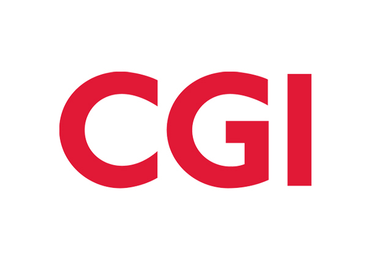
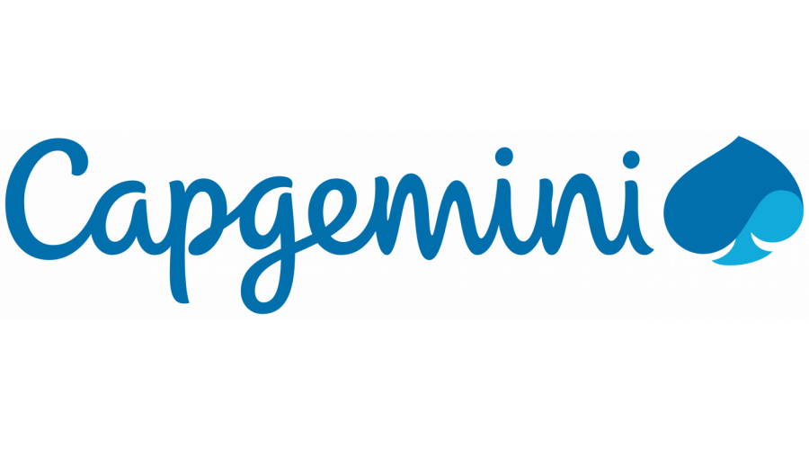
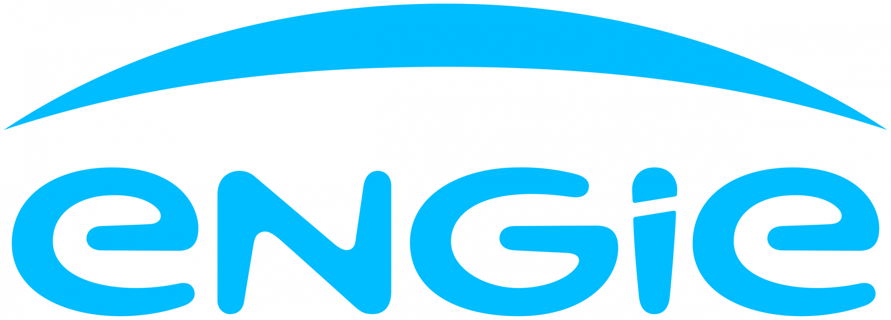

Data & Cloud Architecture
I help companies design governed, scalable data platforms across cloud, lakehouse and distributed systems environments.
About
I am an Entrepreneur, Chief Technical Officer and Data & Cloud Architect from Fez, Morocco, living in Paris, France. My work focuses on designing, evolving and operating modern data platforms across lakehouse, data mesh and distributed systems environments.
I hold an engineering degree in software engineering and a Master 2 in distributed information systems. My academic research explores sensor virtualization and composition approaches for Internet of Things systems, a topic that shaped my interest in complex, distributed and interoperable architectures.
As a CTO, I work on the link between technology, product and business strategy: shaping technical roadmaps, making architecture decisions, setting engineering standards, reducing delivery risk and helping teams turn complex ideas into maintainable systems.
Today, I help teams define technical, functional and organizational solutions for data platforms, especially in cloud and multi-cloud contexts. My work covers architecture guidelines, governance, data quality, observability, onboarding of new teams, architecture reviews, cost and performance optimization, and delivery coordination with agile practices.
Beyond consulting and architecture, I write and review technical books and articles, mainly around technology, data and software architecture. I also build and invest in business initiatives across software, real estate and financial markets, while keeping a strong personal interest in economy, science, philosophy and travel.
Expertise
A practical view of the domains where I help teams make architecture decisions, structure platforms and deliver reliable data products.
A focused view of the professional capabilities I bring to data platform strategy, architecture and delivery.
Lakehouse, data mesh, governance, security and operating models.
Architecture choices across AWS, Azure, on-premise and multi-cloud environments.
Batch, streaming, storage, processing and resilient distributed patterns.
Automation, CI/CD, infrastructure as code, observability and platform reliability.
Ingestion, modeling, transformation, quality controls and consumption layers.
Technology strategy, roadmap framing, architecture governance, team enablement and delivery alignment.
2017 - Present
Leading the company and managing consulting and training offers for customers such as Engie, Decathlon, AXA, Societe Generale, La Poste, BNP and EDF.
2022 - 2027
Designing the data platform architecture and roadmap, validating solution architecture, and supporting teams during implementation.
2018 - 2022
Designed the data platform, implemented core features and transversal tooling, supported onboarding, and trained teams.
2017 - 2018
Administered AXA Cloudera clusters, designed DevOps and automation solutions, and implemented platform and infrastructure features.
2016 -
Thesis: Internet of Things virtualization for cyber-physical mobile systems composition. For more information, see this poster.
2010 - 2011
Specialized in distributed information systems and management.
2006 - 2010
Specialized in software engineering.
2000 - 2045
Obtained certifications in AWS, Hadoop, data science, MongoDB, Cassandra, architecture, Scala, Java and Spring.
- Data Platform Design & Architecture: Consulting and Designing Data Platforms, LakeHouses, Datalakes, and Modern Data Stack solutions. This includes Organization, Architecture, Modeling, Governance, Security, Monitoring, and Data Observability. Development and maintenance of the IT architectural strategy and enterprise vision, continually evaluating tech trends, business needs.
- Integration & High Availability: Designing and integrating existing systems, including BI, analytical and data science systems, with big data platforms. Ensuring high availability through BRP (Business Resumption Planning) and BCP (Business Continuity Planning), and designing highly available, reactive, real-time, secure, and governed solutions that maintain system integrity and continuity.
- Data Layer Design & Engineering: Designing data platform storage layers & zones. Designing ingestion, exchange, logging/archiving, modeling, and exposition features. I specialize in distributed/parallel scalable BigData/NoSQL architectures, coding and consulting on architectural designs. Data Engineering expertise includes Java/Scala/Python with tools such as AirFlow, Spark, DBT, AWS (EMR, GLUE, Athena, Lambda), and Databricks.
- Automation, DevOps & Industrialization: Leading the industrialization and automation of infrastructures and projects using DevOps practices, Infrastructure as Code, and MLOPS strategies. This includes implementing comprehensive engineering stacks and ensuring efficient CI/CD pipelines & IaaC for rapid and reliable deployment cycles.
- Requirements, Monitoring & Observability: Collecting business requirements and setting up both functional and technical solutions. This involves implementing monitoring, audits, and data observability mechanisms to ensure system reliability, security, and governance while providing actionable insights through data metrics and analytics.
- Technical Writing & Presentations: Engaging in pre-sales activities and writing detailed technical specifications. Serve as a Technical Keynote speaker and trainer, deliver presentations that communicate complex ideas clearly and effectively to diverse audiences, ranging from technical teams to executive leadership.
- Accompany teams: Accompany teams setting up & onboarding their use cases.
- Leadership & Planning: Coach, Lead, Estimate, Plan, Organize and monitor projects.
- Team Coordination: Animate meetings and motivate teams, Facilitate relations between and within teams.
- Communication: Communicate on the goals & visions and write reports to the top management.
- Release & Backlog Management: Prepare the releases, iterations and update the user stories and the backlog with the product owner.
- Product Breakdown: Split the product into Use cases and prepare the releases, then Split Use cases into tasks and prepares the iterations.
- Resource Management: Establishment of resources availability and of the production capacity tables.
- Indicators: Generating indicators like (BurnUp/Down charts, Team velocity, Tasks monitoring, Code Quality, Scope).
- Risk Management: Identifications and risks management.
- Platforms: AWS, Azure, Databricks, Dataiku, Cloudera, Confluent, Aiven, etc.
- Storage & Format: NOSQL: Cassandra, MongoDB, DynamoDB, CosmosDB, HBase, Redis, Postgres, RDS. FILE & Object storage : HDFS, S3, ADLS2, GCS. FORMAT : DeltaLake, IceBerg, Parquet, YAML, AVRO, CSV, XML, JSON, etc.
- Processing & Streaming: Kafka, Kinesis, EventHub, Spark, HADOOP, AWS Glue, EMR, DMS, Lambda, EKS, DBT, Talend, etc.
- Consumption & Exposition: Athena, Impala, Trino/Presto, GraphQL/REST, PowerBI, Tableau, QuickSight, SageMaker.
- Automation & Scheduling: Docker, Airflow, Ansible, CloudFormation, Azure DevOPS, Jenkins, Terraform.
- Environments: OnPremise, Cloud, Multi-Cloud, Hybrid architectures.
- Languages: Python, Scala, Java, SQL, CQL, JS.
View all recommendations on LinkedIn

Mehdi is a talented, reliable and extremely knowledgeable data professional. his guidance and advises was instrumental to build and maintain our big data platform at Axa. It is also extremely pleasant to work with Mehdi.
We worked together on the design of an AWS data platform. Mehdi demonstrated both deep technical expertise and a genuine talent for explaining complex topics, together with a keen listening ear and an unfailingly positive attitude.
Among the many options AWS offers, he designed and documented a data platform that met our client's needs and challenges perfectly. The client was effusive in its praise of his contribution.
I recommend Mehdi TAZI without reservation.
We were both Senior Data Architects in the Capgemini Invent team that defined Decathlon’s World Data Platform — roughly six petabytes on AWS and Databricks — and we later co-authored The Definitive Guide to Data Integration (Packt, 2024).
Mehdi is the uncommon architect who can design a lakehouse platform and still write the Spark, Scala, Python or Java that makes it run.
On the World Class Data Platform that meant shaping the target architecture moving a native AWS foundation toward Databricks and Unity Catalog without freezing delivery, and treating governance, data quality, observability and FinOps as part of the design — not as afterthoughts.
In the book he was the voice that kept chapters anchored in what actually fails at this scale: late data, catalog drift, cost, and teams who have never touched the platform.
He is precise, hands-on, and accountable for both the technical decision and the organizational consequence. I would staff him again tomorrow on a large data platform, a Databricks / AWS transformation, or any mandate where a weak design costs years.
Ready for principal and CTO-level work.

I had the pleasure of working alongside Mehdi on our Data Lake team, where he served as a Data Platform Architect. Mehdi stands out for his ability to pair deep technical design with practical, enterprise-grade execution.
Together, we worked on designing core platform functionalities, defining operational RACIs, and establishing robust data quality rules. What impresses me most about Mehdi is his holistic approach to architecture: he doesn't just design platforms for immediate needs, but embeds the governance, quality frameworks, and team clarity required for long-term scalability. Any data organization looking for an architect who can turn complex requirements into structured, high-performing systems would be fortunate to have him.
As part of Engie Global Market's trading surveillance team, we have started a new big data project with many new challenges. Mehdi has helped us tremendously not only on the technical aspect as the big data expert and cloud architect but also on the human aspect and project management. He is always attentive to the client and knows how to coordinate the different devops teams. a real success.

Mehdi participated in the design and implementation of our big data solution for which I was responsible. He helped us define and quickly deploy a solution that effectively met our needs. Being an architect with several successful experiences of effective deployment in production, I can only recommend his profile which is rare today on big data subjects.